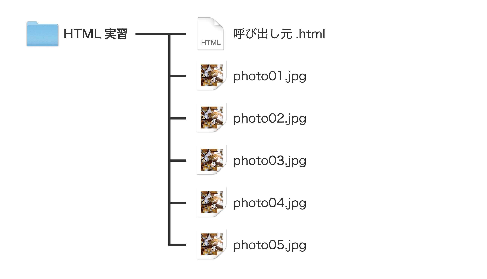
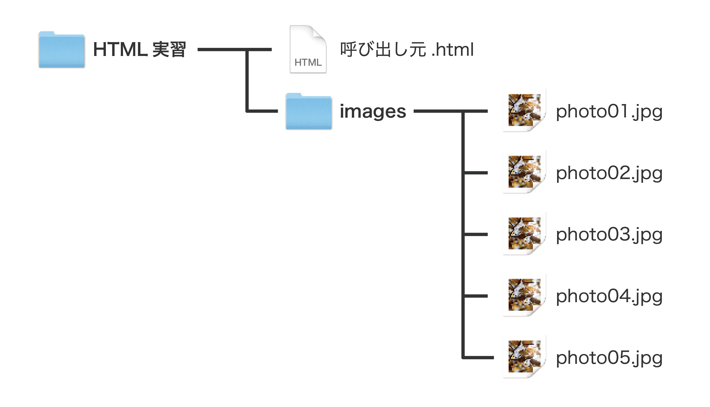

実習ファイルと提出
html14-01.html
取得・提出の案内が表示されないときは、先生に確認してください。
- 自分の学校アカウントで「本人用HTMLを取得」を開きます。
- 取得したファイルを、名前を変えずに HTML実習 フォルダへ保存します。前の実習のHTMLも同じフォルダに置きます。
- HTMLを編集して保存し、ブラウザで画像やリンクも確認します。ファイル内の
joho-issued-html を含む配付情報のコメントは、削除・変更しないでください。
- 「提出する」を開き、保存したHTMLを選んで送信します。「提出を受け付けました」と表示されたことを確認します。
確認できた採点項目には ★ が付きます。受付期間内は何回でも修正して再提出できますが、同じ課題の新しい提出は 60秒以上 あけてください。
★はコードの確認結果です。画像が表示されること、リンクが開くこと、見やすさは、自分のブラウザでも確かめてください。
保存・復元で困ったとき
保存に失敗したときは、編集画面を閉じずに先生に相談してください。作業後は HTML実習 フォルダ全体を別の場所にもコピーしておくと、画像もまとめて戻せます。
提出済みのHTMLは、提出画面の「控えを保存」から控えを保存できます。これは提出時点のHTMLだけで、画像や提出後の編集内容は含みません。テンプレートを取り直しても作業途中の内容は復元されないので、編集中のファイルに上書きしないでください。
(1) 画像の保存先
Webサイトの画像はサイト内のどこに保存されていても呼び出すことは可能ですが、多くのサイトでは画像専用のフォルダを作成して保存しています。この実習でも基本的には画像専用のフォルダ（imagesフォルダ）を作成し、そこに画像を保存することにします。
HTML実習/
├── html14-01.html
└── images/
├── photo01.jpg
├── photo02.jpg
├── photo03.jpg
├── photo04.jpg
└── photo05.jpg
画像はHTMLとは別のファイルです。提出するのは html14-01.html ですが、ブラウザで確認するために画像もこの配置で保存してください。
imagesフォルダの作成
HTML実習フォルダの中に新しく「images」フォルダを作成します。
これ以降、画像ファイルは基本的にimagesフォルダの中に保存することにします。
サンプル画像の保存
次のリンクをクリックして、サンプル画像をダウンロードし、imagesフォルダの中に保存してください。
(2) 画像の挿入
<img>タグ
画像を挿入するには<img>タグを使います。ただし、<img>と書くだけでは画像は表示されません。<img>タグの中に次の属性を加えることで画像を表示します。
| 属性 |
概要 |
| src |
表示する画像ファイルのパスを指定します（必須属性）。パスとは、ファイルの場所を表す文字列のことです（詳細は次項で解説します）。 |
| width |
画像の横幅をピクセルで指定します。 |
| height |
画像の高さをピクセルで指定します。 |
| alt |
画像を表示できないブラウザの場合や読み込みに失敗した場合に画像の代替として表示するテキストを指定します。また、読み上げソフトで読み上げられるので、視覚障害者の方が画像を理解することができるようになるため、アクセシビリティの向上になります。 |
つまり、画像を表示するときには、次のような記述になります。
<img src="パス" width="横幅" height="高さ" alt="代替テキスト">
<img>タグの実習
実際に、<img>タグを使って画像を挿入してみましょう。次のコードを書き写してください。末尾の
<br>タグは改行です。これがないと、画像に続けて文字や他の画像が同じ行内に表示されます。
<img src="./images/photo01.jpg" width="480" height="320" alt="写真01"> <br>
width属性とheight属性は、ブラウザ上で画像の表示サイズを指定します。必須ではありませんがブラウザがページを読み込む際に指定したサイズ分の画像スペースを先に表示し、テキスト部分の読み込みを始めることができます。このことで、閲覧者の体感速度が上がりますので、できるだけ指定するようにしましょう。
続けて、photo02.jpg〜05.jpgも表示しましょう。属性の値は次の表を参考にしてください。なお、photo03.jpgとphoto05.jpgは縦長の写真画像なので、横幅だけ指定すればその比に合わせて表示されます。
<!-- 下記の表を参考に、photo02.jpg〜photo05.jpgを表示させるタグを記入する -->
| 画像ファイル |
横幅 |
高さ |
代替テキスト |
| photo02.jpg |
300 |
200 |
写真02 |
| photo03.jpg |
320 |
指定なし |
写真03 |
| photo04.jpg |
480 |
360 |
写真04 |
| photo05.jpg |
300 |
指定なし |
写真05 |
高さを指定しない場合は、height属性自体を省略します。横幅と高さを両方指定するときは、画像がゆがまないように元画像の縦横比を保つ値にします。
<img>タグで表示できる画像の種類
- JPEG（.jpg）
- 写真など色数の多い画像に適しています。
- PNG（.png）
- イラストやロゴ、図表など、色数の少ない画像に向いています。
- 背景を透過させることが可能です。
- GIF（.gif）
- パラパラ漫画のようなアニメーション画像を作成できます。
- SVG（.svg）
- ベクター形式のため、拡大してもぼやけずに綺麗な表示が可能です。
- ロゴやアイコンの表示に適しています。
- WebP（.webp）
- JPEGやPNGよりもファイル容量が小さく、高画質を維持できる次世代の画像形式です。
- ブラウザによっては対応していない場合があるため、注意が必要です。
(3) ファイルパスについて
<img>タグで画像ファイルを指定したり、他のページへ移動するためのリンクを指定したりするときには、呼び出し元のページから、対象のファイルを指定します。ファイルの位置を指定するための記述をパスといい、相対パスと絶対パスの２通りの記述方法があります。
ファイル名を付けるときの注意：入力ミスや公開後のリンク切れを避けるため、画像やHTMLのファイル名には、半角の英小文字・数字・ハイフン（-）・アンダースコア（_）を使い、空白や日本語は避けると安全です。HTMLに記述するファイル名は、拡張子を含めて、実際のファイル名と大文字・小文字まで一致させます。例えば、photo01.jpgとPhoto01.JPGは、別のファイル名として扱われる環境があります。
相対パス
呼び出し元のファイルからみた、対象のファイルの位置を指定する方法です。
呼び出し元と同一フォルダにあるファイルを参照
呼び出し元のファイルと同一フォルダにあるファイルは、「./」のあとに続けてファイル名を記述します。例えば、同じフォルダにあるphoto01.jpgという画像を表示する場合は次のように記述します。

<img src="./photo01.jpg">
「./」は省略可能なので、次のようにファイル名のみを記述しても表示されます。
<img src="photo01.jpg">
特定のフォルダ内にあるファイルを参照
特定のフォルダ内にあるファイルを指定する場合は、「/」を使って「フォルダ名/ファイル名」と記述します。
呼び出し元と同一フォルダにある「images」というフォルダの中にある場合は次のように記述します。

<img src="./images/photo01.jpg">
１つ上の階層を指定する場合は、「../」を使います。呼び出し元のフォルダと同階層にある「images」というフォルダの中にある場合は次のように記述します。
<img src="../images/photo01.jpg">
絶対パス
絶対パスは呼び出したいファイルが別のWebサイトで公開されている場合に指定します。httpやhttpsから始まるWebサイトのアドレス（URL）を使ってファイルの場所を指定します。
<img src="https://www.kaijo.ed.jp/wp-content/themes/kaijo-pc/assets/img/apple-touch-icon.png">
{kind=link}
{kind=link}
{kind=link}
{kind=link}
{kind=link}